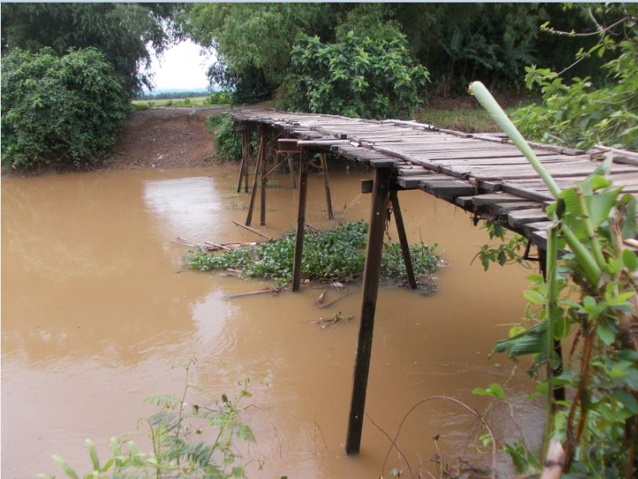

Từ nhà đến trường, tôi phải đi qua một cây cầu ván.
Cây cầu nầy đã có từ lâu lắm! Lớn tuổi hơn tôi là cái chắc, vì khi tôi còn chưa mọc đủ răng thì răng của nó đã rụng nhiều. Mỗi ngày không biết tôi giẫm ngang mình nó bao nhiêu lượt. Ngoài bốn lượt đi học, đi về- hồi đó tụi tôi học hai buổi- còn vô số lần khác như đi mua nước đá cho má ở cái tiệm cà phê tại cây số 16, hoặc lên nhà con Ngỡ, con Bông…

.Nhưng nhiều nhất là trong các trò chơi như sắp hàng chạy đua mà đích đến là đầu cầu bên kia, hoặc thách nhau đi trên con lươn sát mép cầu -trò chơi nầy đã có lần làm tôi bị một trận đòn lịch sữ- Con Xôi, con cậu hai Nếp thách tôi dám đi qua đi lại trên con lươn hai bận, thì sẽ chịu thua một cắc bạc. Nó đâu có biết là tôi thích cảm giác mạnh. Khi tôi đang biểu diễn thì mấy đứa khác chạy về cho má tôi hay. Má tức tốc có mặt tại hiện trường. Tôi bị xách lỗ tai lôi về, chẳng những bị “xù” tiền chung độ mà còn ăn đòn te tua vì chơi dại. Giờ nhắc tới còn giận.
Cây cầu ván nầy cách nhà tôi chừng vài chục mét. Nó được làm toàn bộ bằng gỗ. Chân là những thân cây rất to, mặt lót những tấm ván dầy cui, rộng chừng hai tấc rưởi và dài bằng chiều ngang của cây cầu khoảng ba, bốn mét gì đó. Nó là nơi qui tụ của mấy đứa con trai xóm trên, xóm dưới. Chúng chơi đánh trận, bắn nhau bằng mấy cây súng làm từ những cọng lá chuối để chiếm cầu.
Vào những buổi chiều trên cầu vui lắm! Lúc đó mấy đứa con nít nhảy cầu tắm sông, mấy anh thanh niên, mấy chú sồn sồn, mấy ông lớn tuổi ngồi lên mấy con lươn hóng gió. Thỉnh thoảng một chiếc xe “Phu lích” trống hoặc chở chừng đôi ba người khách chạy qua ( từ ba giờ chiều trở lên là xe ế khách), bánh sau bị mắc kẹt ở cái khe rộng do bị mất một tấm ván, thế là họ hè nhau đẩy phụ.
Cái cảnh đẩy xe nầy ngày nào cũng có, nhất là vào mùa mưa. Khi đó nước chảy ào ào, khoét những cái ổ gà thành ổ chó, rồi ổ voi. Những chiếc xe đò hay bị kẹt cứng vì một cái bánh xe nằm gọn hơ trong vũng sình. Cảnh tượng lúc ấy rất gay cấn, chiếc xe nghiêng hẳn về một bên, mọi người trên xe lục đục kéo xuống rồi hè nhau đẩy. Có lần một chiếc xe đám cưới đi ngang nhà tôi bị mắc lầy. Bà con ăn mặc lịch sự đều xăn quần lột dép mà đẩy xe, xong rồi xuống bến rửa tay chân, lên xe đi tiếp.
Vào mùa mưa, nước từ khắp nơi dồn về mương, chảy rất xiết. Lúc ấy chân cầu run bần bật như bà già đi âm phủ vậy. Khi nước lên lé đé mặt cầu, mấy chiếc xuồng không trôi lọt qua, người chủ xuồng hú lên một tiếng:" Bà con ơi! giúp một tay khiêng cái xuồng qua cầu giùm". Thế là mọi người túa lại, chia đều ra đứng kín hai bên, nâng chiếc xuồng lên ngang vai với sự reo hò tở mở của bầy con nít.
Những chiếc xe đò đều bắt khách xuống hết đi bộ qua cầu, chiếc xe trống lổng nhích từng chút một. Nó bò qua cầu trong sự hồi họp của hết thảy mọi người.
Nói gì mấy chiếc xe lớn, ngay như mấy đứa nhóc tụi tôi, đạp mấy chiếc xe nhỏ xíu, hai cái bánh chỉ bự bằng cái sàng rê gạo, mà cũng được người lớn dặn tới dặn lui là phải xuống cầu dắt xe đi bộ. Mấy cái tai nạn xảy ra trên những cây cầu ở tận đẩu, tận đâu được đem về tô vẽ rồi phóng đại lên gấp mấy lần làm tụi tôi khiếp vía.
Vào những năm lũ lớn, cây cầu bị nhấn chìm chẳng thấy mặt mày, lúc nầy việc đi lại trên đường rất hạn chế. Mấy chiếc “tắc ráng” thay thế xe đò. Xuồng cui, xuồng ba lá thay thế xe lôi, xe đạp. Cái đám nhóc bị cấm đi qua cầu, tuy nhiên lâu lâu cũng lén rủ nhau đi gặp bạn. Tụi tôi nắm tay nhau mò mẫm, đôi khi một đứa xui xẽo chân lọt xuống kẹt ván thế là cùng la làng chói lói, phải xúm nhau kéo cái cẳng nó lên giùm.
Có một lần cây cầu ván ấy đã mang lại một niềm tự hào vô cùng to lớn cho tụi tôi, khi một chiếc “hủ lô” làm sập cầu và rơi tỏm xuống mương.
Cái tai nạn ấy làm mặt mày đứa nào, đứa nấy đều sáng rở. Cả mấy năm sau chúng tôi vẫn còn nhắc tới nó với một niềm hãnh diện vô biên.
Khi những đứa con nít ở xóm khác đem mấy cái sự kiện dữ dội ở xóm nó ra khoe như: “Xóm tao có một con bò cái sanh tới hai con bò con”, " xóm tao có cái chú đó đi lính về còn có một cái giò", hoặc là “xóm tao có anh…học giỏi lắm, mới đậu tú tài”...Thì tụi tôi chặn họng nó liền, bằng cách đứng chống nạnh, chỉ ngón trỏ về phía cây cầu, chĩa cái càm thẳng ra phía trước mà thách:
-Xóm tao có chiếc xe hủ lô lọt xuống cầu, xóm mầy có hông?
Cái thành tích chói lọi ấy làm cả bọn chúng đều bí xị.Từ đó hết dám ho he.
Và khi đưa con trai út về làng “vinh quy bái tổ”. Lúc hai mẹ con đi ngang qua cây cầu ván ấy, tôi bỗng lấy lại cái giọng điệu con nít ngày xưa mà khoe: ”Hồi mẹ còn nhỏ xíu, đã có một chiếc xe hủ lô lọt xuống cây cầu nầy”.